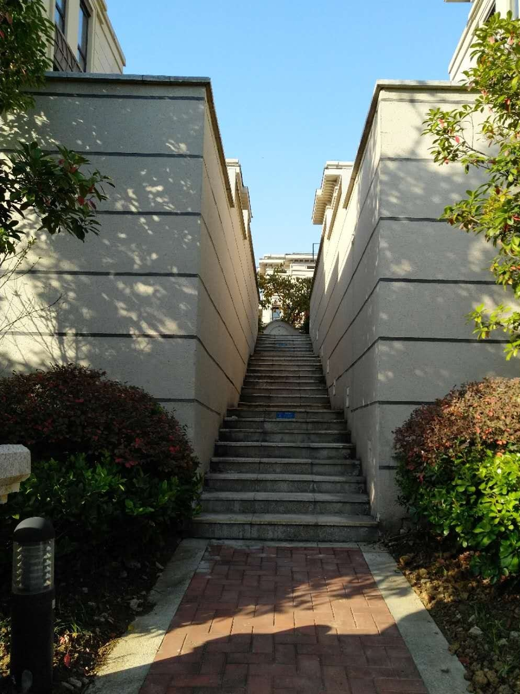
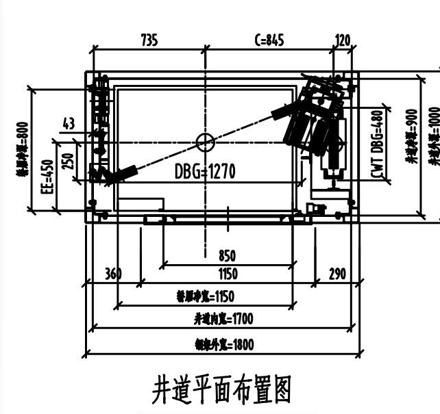
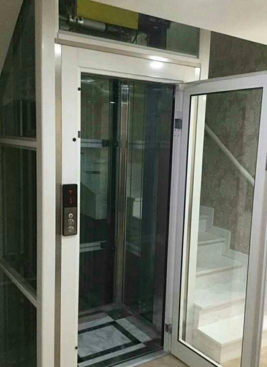
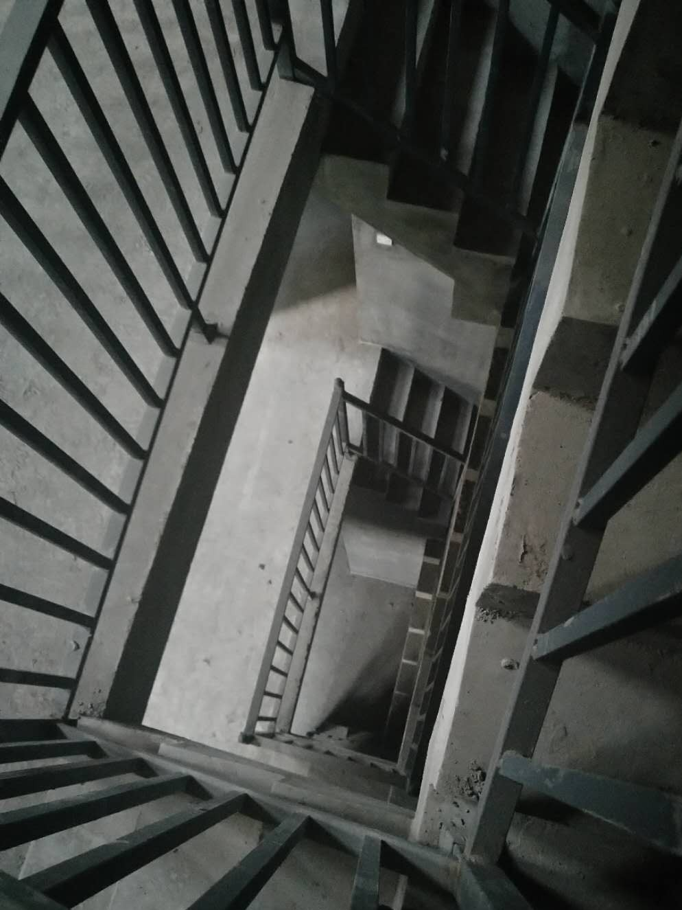
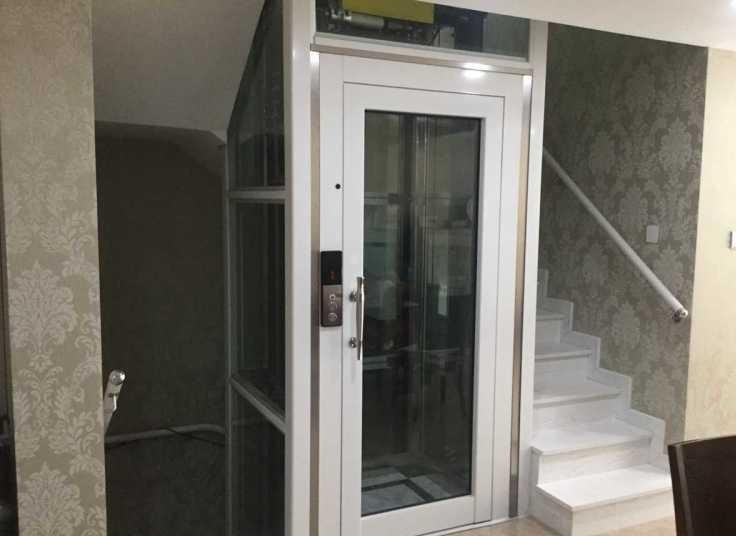
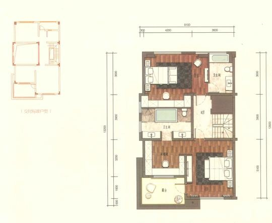
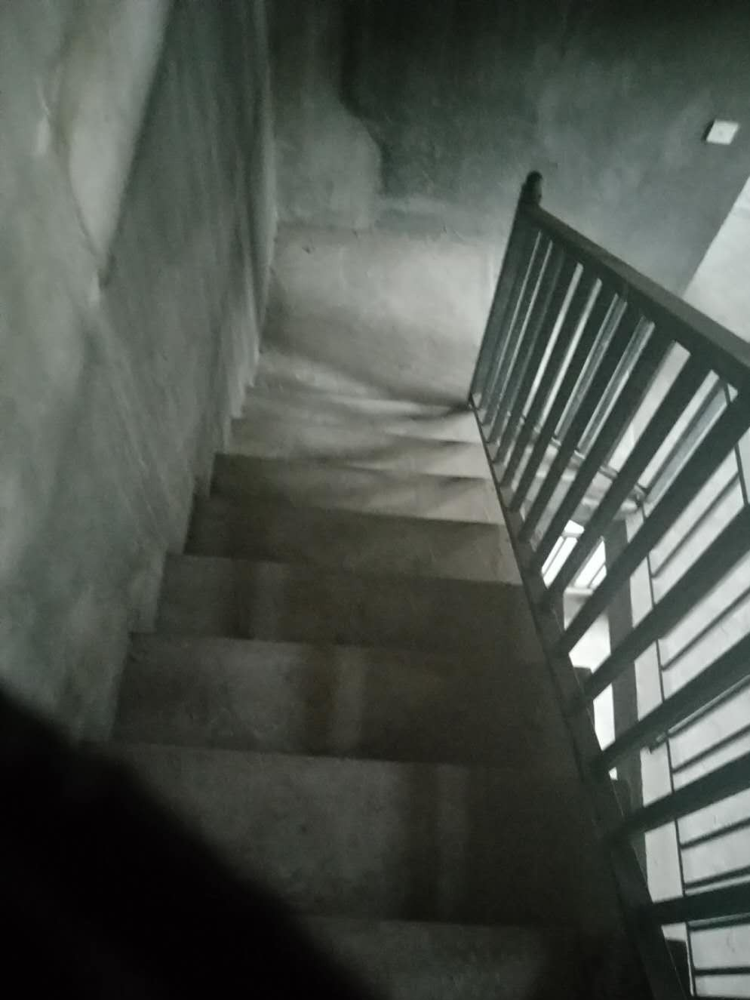

案例 / 合肥别墅电梯 / 安装前条件
项目类型
合肥别墅加装
房屋场景
海亮九台别墅
现场问题
井道、楼梯与结构固定点
方案重点
先看条件再定方案
案例背景
项目地点为合肥海亮九台别墅，属于典型的合肥别墅加装电梯场景。
这一类别墅案例最有价值的地方，是能把“先看条件再定方案”说得更直观。
现场条件
| 项目 | 记录 |
|---|---|
| 项目类型 | 合肥别墅加装家用电梯 |
| 判断重点 | 井道、楼梯、开门方向和结构固定点 |
| 方案特点 | 先看平面布置图，再看现场安装图 |
| 案例价值 | 适合作为别墅安装前判断参考 |
从平面布置图和现场图能看出，这类项目不能只看某一个洞口或某一层效果，而要把井道、楼梯、开门方向和结构固定点一起核对。
方案判断
方案判断是按现场条件匹配适合的家用电梯形式，而不是直接套标准答案。
别墅案例里最容易出问题的，往往不是设备本身，而是前期尺寸、楼梯通行和安装顺序没有理顺。
- 先看平面布置图，再看现场图。
- 先确认楼梯通行，再定开门方向。
- 先把结构固定点理顺，再谈设备形式。
对业主的参考价值
对合肥别墅业主而言，这类文章能帮助理解为什么装电梯前必须先看现场。
别墅装电梯，先看井道、楼梯和开门方向，再看设备形式，顺序不能反。
俞工点评
先看房子，再看电梯。顺序反过来，方案往往会跑偏。
常见问题FAQ
别墅安装电梯前，最先该看什么？
先看井道位置、楼梯关系、底坑和顶层高度，再看开门方向是否会影响通行。
没有预留井道的别墅还能不能做？
可以先确认楼层、顶层高度、底坑条件和施工位置，再考虑钢结构井道或其他可落地方案。
为什么这类别墅案例要先看平面布置图？
因为平面图能把井道、楼梯和开门关系一起看清楚，先看图纸再去现场，判断会更稳。
装电梯前需要先测量哪些尺寸？
通常要先看井道净尺寸、门洞、底坑、顶层高度、楼梯关系和开门方向，必要时还要复核结构条件。
项目图片记录





图纸与尺寸参考



如果你家也是自建房、别墅或楼梯中间空间想加装家用电梯，建议先让俞工根据现场尺寸、井道条件、地坑和顶层高度做一次判断，再确定方案和预算。咨询电话：15056952050。
先看现场条件，再谈方案和预算。

微信咨询俞工
扫码发送现场照片，先初步判断能不能装。
建议拍井道、楼梯、底坑和顶层高度。